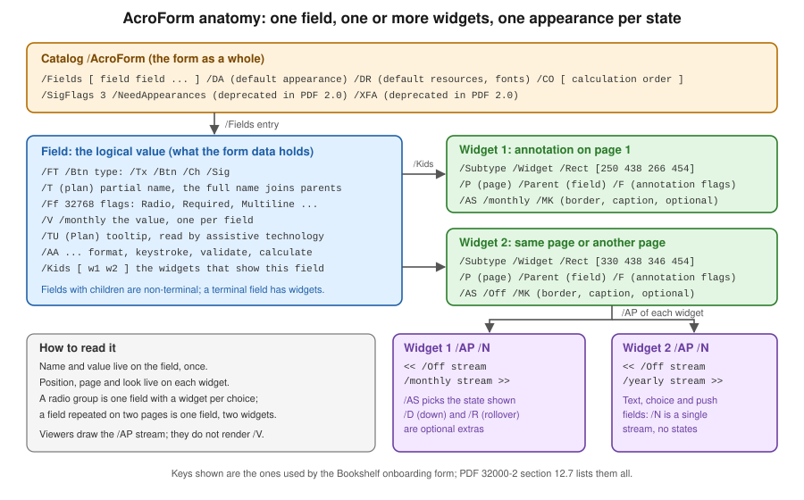

Editable PDF Forms: Fundamentals
|
This content was generated with the assistance of AI and should be verified against the official documentation before being relied on in production. |
An editable PDF form is a PDF page with interactive controls on it: text boxes, check boxes, radio buttons, drop-down lists, push buttons and signature areas that a person fills in a viewer and saves, prints or sends back. The Bookshelf Billing scenario of this section has one: a customer onboarding form that is generated by the service, filled by the customer, checked, flattened and returned signed. Before generating or filling such a form with any library, it pays to understand what the file really contains, because most surprises (a value that does not show, a check box that cannot be found by name, a signature that breaks when the form is filled) come from the structure and not from the API. This page explains that structure and the behaviour built on top of it, and shows each point with Java code.
Versions are stated as of 2026-10-09: iText Core 9.8.0 with bouncy-castle-adapter 9.8.0 on Java 21. Every Java example on
this page was compiled against those versions and run, and the output shown was produced by those runs, with long
identifiers replaced by placeholders. What was not exercised is stated where it matters: no example was opened in
Acrobat, so the behaviour of JavaScript actions and of submit buttons is described from the specification and the
iText documentation and not observed in a viewer.
How to create and fill forms with each library is in separate pages:
Editable Forms with iText covers the iText builders, the layout
form elements, filling, flattening and XFDF in depth, and
Editable Forms with JasperReports and PDFBox
covers the JasperReports AcroForm export and the PDFBox PDAcroForm. How a PDF file is built in general is in
How a PDF File Works, and the standards that deprecated parts of what
is described here are in
PDF Standards and Conformance.
Two form technologies: AcroForm and XFA
A PDF can carry two unrelated kinds of forms.
AcroForm is the original technology, defined in section 12.7 of ISO 32000 (PDF 1.2 introduced it, and PDF 2.0 keeps it). The form is made of ordinary PDF objects: a list of fields in the document catalog, and widget annotations on the pages that draw them. Every PDF viewer and every PDF library understands it, and it is the only form technology that has a future.
XFA (the XML Forms Architecture) is Adobe’s second technology. An XFA form is not drawn from page content at all: the
PDF contains XML templates and data, and a viewer that supports XFA generates the pages at run time. A file that has an
XFA form often contains a single placeholder page that asks the user to open the document in a newer Adobe reader. XFA is
deprecated in PDF 2.0, which is ISO 32000-2:2020, and the XFA packets are not part of the PDF 2.0 standard. Most browsers
and mobile viewers never supported it. Finding O14 of this section’s source analysis is that the first-edition iText book consulted
for the section (iText 1.4 era, not reproduced here) predates all of this and presents XFA as a current way to build forms
and PDF/A-1 as the only archival profile. Neither statement is true for new work: build AcroForms, treat XFA as legacy, and when you must handle an XFA
file ask the vendor of your library how it supports it. In the iText family XFA handling is the commercial pdfXFA add-on
(described in Editable Forms with iText); iText Core itself
can detect an XFA form with PdfAcroForm.hasXfaForm() and remove it with removeXfaForm(). PDFBox 3.0.8 and
JasperReports 7.0.8 do not produce XFA.
The rest of this page is about AcroForms only. Section 12.7 of the standard is reachable through the sponsored access page of the PDF Association, ISO 32000-2 sponsored standards, and the iText Knowledge Base explains the same material with examples in Interactive forms and Chapter 4: Making a PDF interactive.
Anatomy of an AcroForm: field, widgets, appearances
Three kinds of object cooperate, and keeping them apart is the key to the whole topic.
-
The AcroForm dictionary hangs off the document catalog under
/AcroForm. Its/Fieldsarray lists the root fields. It also carries form-wide settings: the default appearance string/DA, the default resources/DRwith the fonts the fields may use, the calculation order/CO, the signature flags/SigFlags, and two deprecated entries,/NeedAppearancesand/XFA. -
A field is the logical data item: it has a type
/FT, a partial name/T, a value/V, flags/Ff, an optional tooltip/TUand optional actions/AA. A field does not have a position on a page. The full name of a field is the partial names of its ancestors and itself joined by dots, so a fieldaddresswith a childstreetis addressed asaddress.street, and that full name is what a library looks up and what a submitted form data set uses. -
A widget is the visible control. It is an annotation with
/Subtype /Widgetthat has a rectangle on a page and an appearance. One field can have one widget, which is by far the most common case, or several: a radio group is one field with one widget per choice, and a field that must show up on two pages is one field with two widgets that always show the same value.
The following figure shows the structure of a radio group, the smallest example in which all three levels are visible.

When a field has exactly one widget, the PDF syntax lets the field dictionary and the widget dictionary be the same
object, and iText does exactly that. In the file written by the example below, the text field fullName is a single
dictionary that contains /FT /Tx, /T (fullName), /Ff 2, /Rect, /Subtype /Widget and /AP all together. A
radio group is different: the field has /Kids and each kid is a widget with its own /Rect and /AP. A reader of the
file cannot tell from the dictionary alone which situation applies, so tools use the keys: a dictionary with
/Subtype /Widget is a widget, and a dictionary with /FT or /Kids is a field, and a merged dictionary is both. A
library hides this: in iText PdfFormField.getWidgets() returns the widgets of a field whether or not they are merged.
The consequences matter in practice.
-
Setting a value changes
/Von the field, but nothing is visible until every widget of the field has an appearance stream that shows the new value. That is the work a library does when you callsetValue, and it is why a form that was edited by changing/Vwith a low-level tool shows stale text. -
Two fields with the same full name are the same field. The widgets of the radio buttons above share the name
planon purpose, and the values of the buttons are the names of the states in their appearance dictionaries. -
A field is not tied to a page. A page lists its widgets in
/Annots, and a widget that is in the page but not reachable from the AcroForm/Fieldstree is an orphan that some viewers show and no form library lists.
Field types
The type /FT of a terminal field is one of four names, and the flags /Ff refine it.
/FT |
Control | What the value is |
|---|---|---|
|
Text field: single line, multiline, password, comb (equally spaced cells), rich text, file selection |
A text string; for a rich text field, also an XHTML string in |
|
Button: check box, radio button group, push button (no flag set for a check box) |
A name: the state of the check box or the selected radio button, such as |
|
Choice: combo box (drop-down list, optionally editable) or list box (optionally multi-select) |
A text string, or an array of strings for a multi-select list. The |
|
Signature field: an area that holds, or will hold, a digital signature |
A signature dictionary, or nothing while the field is unsigned. |
iText represents them with PdfTextFormField, PdfButtonFormField (check box, radio group and push button),
PdfChoiceFormField and PdfSignatureFormField, all subclasses of PdfFormField, and creates them with the six builders
TextFormFieldBuilder, CheckBoxFormFieldBuilder, RadioFormFieldBuilder, ChoiceFormFieldBuilder,
PushButtonFormFieldBuilder and SignatureFormFieldBuilder. The books written for iText 2 and 5 create fields with
PdfFormField.createXxx static methods and read them with AcroFields; none of those exist in iText 9, which is the
subject of finding O10 and of
Editable Forms with iText.
Field flags
The integer /Ff of a field is a set of bits. Some bits mean the same for every type, and some are reused with
a different meaning for each type, which is why a flag can only be interpreted together with /FT. The table lists the
flags that matter in a business form, with the numeric value they add to /Ff and the iText accessor.
| Flag | Applies to | Value | Meaning and iText accessor |
|---|---|---|---|
ReadOnly |
all |
1 |
The user cannot change the value. Often used for calculated fields. |
Required |
all |
2 |
The field must have a value before the form is submitted. Viewers enforce it only when a submit action runs. |
NoExport |
all |
4 |
The field is not included in submitted data. |
Multiline |
text |
4096 |
The text wraps over several lines. |
Password |
text |
8192 |
Characters are shown as asterisks and the value is not stored by viewers. |
NoToggleToOff |
radio |
16384 |
A selected radio button cannot be deselected by clicking it again. |
Radio |
button |
32768 |
The button field is a radio group. Set by |
Pushbutton |
button |
65536 |
The button field is a push button, with no value. Set by |
Combo |
choice |
131072 |
A drop-down list rather than a list box. Set by |
Edit |
choice, combo |
262144 |
The user can type a value that is not in the list. |
MultiSelect |
choice, list |
2097152 |
Several items can be selected, so |
DoNotSpellCheck |
text, choice |
4194304 |
The viewer does not spell check the value. |
DoNotScroll |
text |
8388608 |
The field does not scroll once it is full. |
Comb |
text |
16777216 |
Equal cells, one character per cell; needs |
RichText |
text |
33554432 |
The field can hold formatted text. |
CommitOnSelChange |
choice |
67108864 |
The value is committed as soon as the selection changes. |
The values in the table are the ones read back from the file generated below: the fullName field has /Ff 2, the
notes field 4096, the pin field 8192, the customerId field 16777216, the editable combo box 393216, which
is Combo 131072 plus Edit 262144, and the radio group 32768. The widget also has annotation flags in /F, such as the
bit that makes it print, which are separate from the field flags /Ff.
Building the onboarding form
The example below creates one field of every kind with iText, so that the later sections have something concrete to
inspect, fill, certify and flatten. It is intentionally a compact tour and not a layout lesson; each builder and every
option are documented in
Editable Forms with iText. The Maven coordinates are the same
pair as in the rest of this section (iText Core as a POM aggregator and the Bouncy Castle adapter, which is needed by the
signing example below). iText is released under the AGPLv3 or under a commercial licence, which also applies to the
forms module used here, as explained in
Introduction and Approaches.
<dependency>
<groupId>com.itextpdf</groupId>
<artifactId>itext-core</artifactId>
<version>9.8.0</version>
<type>pom</type>
</dependency>
<dependency>
<groupId>com.itextpdf</groupId>
<artifactId>bouncy-castle-adapter</artifactId>
<version>9.8.0</version>
</dependency>package com.example.forms;
import com.itextpdf.forms.PdfAcroForm;
import com.itextpdf.forms.fields.CheckBoxFormFieldBuilder;
import com.itextpdf.forms.fields.ChoiceFormFieldBuilder;
import com.itextpdf.forms.fields.PdfButtonFormField;
import com.itextpdf.forms.fields.PdfChoiceFormField;
import com.itextpdf.forms.fields.PdfFormAnnotation;
import com.itextpdf.forms.fields.PdfFormCreator;
import com.itextpdf.forms.fields.PdfFormField;
import com.itextpdf.forms.fields.PdfTextFormField;
import com.itextpdf.forms.fields.PushButtonFormFieldBuilder;
import com.itextpdf.forms.fields.RadioFormFieldBuilder;
import com.itextpdf.forms.fields.SignatureFormFieldBuilder;
import com.itextpdf.forms.fields.TextFormFieldBuilder;
import com.itextpdf.kernel.geom.PageSize;
import com.itextpdf.kernel.geom.Rectangle;
import com.itextpdf.kernel.pdf.PdfArray;
import com.itextpdf.kernel.pdf.PdfDocument;
import com.itextpdf.kernel.pdf.PdfName;
import com.itextpdf.kernel.pdf.PdfString;
import com.itextpdf.kernel.pdf.PdfWriter;
import com.itextpdf.kernel.pdf.action.PdfAction;
import com.itextpdf.layout.Document;
import com.itextpdf.layout.element.Paragraph;
import com.itextpdf.layout.properties.TextAlignment;
import com.itextpdf.layout.properties.VerticalAlignment;
import java.io.ByteArrayOutputStream;
/** Builds the Bookshelf customer onboarding form: one field of every kind, with flags and JavaScript. */
public class OnboardingForm {
public byte[] build() throws Exception {
ByteArrayOutputStream out = new ByteArrayOutputStream();
try (PdfDocument pdf = new PdfDocument(new PdfWriter(out));
Document layout = new Document(pdf, PageSize.A4)) {
pdf.addNewPage();
pdf.getCatalog().setLang(new PdfString("en-US"));
PdfAcroForm form = PdfFormCreator.getAcroForm(pdf, true);
layout.add(new Paragraph("Bookshelf customer onboarding").setFontSize(18));
label(layout, "Full name (required)", 56, 760);
label(layout, "E-mail (validated)", 56, 724);
label(layout, "Customer id (comb, 8 cells)", 56, 688);
label(layout, "PIN (password)", 56, 652);
label(layout, "Notes (multiline)", 56, 616);
label(layout, "Country (combo, editable)", 56, 540);
label(layout, "Interests (list)", 56, 504);
label(layout, "Plan (radio)", 56, 440);
label(layout, "Newsletter (check box)", 56, 404);
label(layout, "Quantity x unit price = total (calculated)", 56, 368);
// /Tx text fields and their flags
PdfTextFormField name = new TextFormFieldBuilder(pdf, "fullName")
.setWidgetRectangle(new Rectangle(250, 756, 280, 20)).setPage(1).createText();
name.setMaxLen(60).setRequired(true).setAlternativeName("Full name of the customer");
form.addField(name);
PdfTextFormField email = new TextFormFieldBuilder(pdf, "email")
.setWidgetRectangle(new Rectangle(250, 720, 280, 20)).setPage(1).createText();
email.setAlternativeName("E-mail address");
// /AA /V: validate action, runs when the user commits the value
email.setAdditionalAction(PdfName.V, PdfAction.createJavaScript(
"if (event.value && !/^[^@\\s]+@[^@\\s]+$/.test(event.value)) {"
+ " app.alert('Enter a valid e-mail address'); event.rc = false; }"));
form.addField(email);
PdfTextFormField customerId = new TextFormFieldBuilder(pdf, "customerId")
.setWidgetRectangle(new Rectangle(250, 684, 160, 20)).setPage(1).createText();
customerId.setComb(true).setMaxLen(8).setAlternativeName("Customer id, eight characters");
form.addField(customerId);
PdfTextFormField pin = new TextFormFieldBuilder(pdf, "pin")
.setWidgetRectangle(new Rectangle(250, 648, 100, 20)).setPage(1).createText();
pin.setPassword(true).setAlternativeName("Personal identification number");
form.addField(pin);
PdfTextFormField notes = new TextFormFieldBuilder(pdf, "notes")
.setWidgetRectangle(new Rectangle(250, 580, 280, 52)).setPage(1).createMultilineText();
notes.setAlternativeName("Notes");
form.addField(notes);
// /Ch choice fields: an editable combo box and a multi-select list
PdfChoiceFormField country = new ChoiceFormFieldBuilder(pdf, "country")
.setWidgetRectangle(new Rectangle(250, 536, 200, 20)).setPage(1)
.setOptions(new String[]{"Spain", "France", "Portugal"}).createComboBox();
country.setEdit(true).setValue("Spain").setAlternativeName("Country");
form.addField(country);
PdfChoiceFormField interests = new ChoiceFormFieldBuilder(pdf, "interests")
.setWidgetRectangle(new Rectangle(250, 470, 200, 60)).setPage(1)
.setOptions(new String[]{"Fiction", "Technical", "Comics"}).createList();
interests.setMultiSelect(true).setAlternativeName("Interests");
form.addField(interests);
// /Btn radio group: one field, two widgets
RadioFormFieldBuilder radios = new RadioFormFieldBuilder(pdf, "plan");
PdfButtonFormField plan = radios.createRadioGroup();
plan.setAlternativeName("Plan");
PdfFormAnnotation monthly = radios.createRadioButton("monthly", new Rectangle(250, 438, 16, 16));
PdfFormAnnotation yearly = radios.createRadioButton("yearly", new Rectangle(330, 438, 16, 16));
monthly.setPage(1);
yearly.setPage(1);
plan.addKid(monthly);
plan.addKid(yearly);
plan.setValue("monthly");
form.addField(plan);
label(layout, "monthly", 272, 440);
label(layout, "yearly", 352, 440);
// /Btn check box
PdfButtonFormField newsletter = new CheckBoxFormFieldBuilder(pdf, "newsletter")
.setWidgetRectangle(new Rectangle(250, 402, 16, 16)).setPage(1).createCheckBox();
newsletter.setAlternativeName("Subscribe to the newsletter");
form.addField(newsletter);
// calculated fields and /CO, the calculation order
PdfTextFormField qty = number(pdf, form, "qty", 250, 364, "2");
PdfTextFormField price = number(pdf, form, "price", 320, 364, "12.50");
PdfTextFormField total = number(pdf, form, "total", 390, 364, "");
total.setReadOnly(true).setAlternativeName("Total");
total.setAdditionalAction(PdfName.C, PdfAction.createJavaScript(
"event.value = this.getField('qty').value * this.getField('price').value;"));
PdfArray order = new PdfArray();
order.add(total.getPdfObject().makeIndirect(pdf));
form.getPdfObject().put(PdfName.CO, order);
// push buttons: reset and submit actions
PdfButtonFormField reset = new PushButtonFormFieldBuilder(pdf, "reset")
.setWidgetRectangle(new Rectangle(250, 320, 80, 24)).setPage(1).setCaption("Reset").createPushButton();
reset.getFirstFormAnnotation().setAction(PdfAction.createResetForm(null, 0));
reset.setAlternativeName("Reset the form");
form.addField(reset);
PdfButtonFormField submit = new PushButtonFormFieldBuilder(pdf, "submit")
.setWidgetRectangle(new Rectangle(340, 320, 80, 24)).setPage(1).setCaption("Submit").createPushButton();
// flags: SUBMIT_XFDF sends XFDF; 0 would send FDF, SUBMIT_HTML_FORMAT would send form-encoded text
submit.getFirstFormAnnotation().setAction(PdfAction.createSubmitForm(
"https://billing.example.test/onboarding", null, PdfAction.SUBMIT_XFDF));
submit.setAlternativeName("Submit the form");
form.addField(submit);
// /Sig field, left unsigned
PdfFormField signature = new SignatureFormFieldBuilder(pdf, "customerSignature")
.setWidgetRectangle(new Rectangle(250, 240, 200, 50)).setPage(1).createSignature();
signature.setAlternativeName("Customer signature");
form.addField(signature);
pdf.getPage(1).setTabOrder(PdfName.S); // follow the structure order, not the widget order
}
return out.toByteArray();
}
private static PdfTextFormField number(PdfDocument pdf, PdfAcroForm form, String name, float x, float y, String value) {
PdfTextFormField field = new TextFormFieldBuilder(pdf, name)
.setWidgetRectangle(new Rectangle(x, y, 60, 20)).setPage(1).createText();
field.setValue(value).setAlternativeName(name);
form.addField(field);
return field;
}
private static void label(Document layout, String text, float x, float y) {
layout.showTextAligned(new Paragraph(text).setFontSize(10), x, y + 5, 1, TextAlignment.LEFT,
VerticalAlignment.BOTTOM, 0);
}
}Points worth noticing in the code, because they hold for every form you build:
-
Each field is created with a builder bound to a
PdfDocument, a field name and a page, and a rectangle for the widget. The name is the key for filling, flattening and submitting, so choose it as carefully as a column name. -
addFieldregisters the field in the AcroForm/Fieldsarray and puts the widget on the page given to the builder. Forgetting it leaves a field that exists in memory and not in the file. -
The radio group is one field.
createRadioGroup()creates it,createRadioButton(value, rectangle)creates each widget with the name of its state, andaddKidattaches the widget to the group. The group valuemonthlyselects the widget whose appearance dictionary has a state of that name. -
The alternative name set with
setAlternativeNamebecomes/TU, the tooltip, which assistive technology reads as the label of the control. It is the single most important accessibility attribute of a field and is discussed below. -
The
/COentry gives the calculation order, discussed in the JavaScript section. The page’s tab order is set toPdfName.S, which makes the tab key follow the document structure and not the order the widgets were added.
The official documentation behind the example is the iText Knowledge Base article
Creating form fields, the builders in the
TextFormFieldBuilder
Java API page and the
Forms module changes article for what changed from iText 7.
Looking inside the file
A short inspector makes the structure of the previous section visible, and is useful in tests: generate the form, read it back and assert on the flags and widgets, instead of opening a viewer.
package com.example.forms;
import com.itextpdf.forms.PdfAcroForm;
import com.itextpdf.forms.fields.PdfFormCreator;
import com.itextpdf.forms.fields.PdfFormField;
import com.itextpdf.kernel.pdf.PdfArray;
import com.itextpdf.kernel.pdf.PdfDictionary;
import com.itextpdf.kernel.pdf.PdfDocument;
import com.itextpdf.kernel.pdf.PdfName;
import com.itextpdf.kernel.pdf.PdfReader;
import com.itextpdf.kernel.pdf.annot.PdfWidgetAnnotation;
import java.io.ByteArrayInputStream;
import java.util.ArrayList;
import java.util.List;
import java.util.Map;
/** Prints the field, widget and appearance structure of a PDF: what the figure on this page shows. */
public class FormInspector {
public static void print(byte[] pdfBytes) throws Exception {
try (PdfDocument pdf = new PdfDocument(new PdfReader(new ByteArrayInputStream(pdfBytes)))) {
PdfAcroForm form = PdfFormCreator.getAcroForm(pdf, false);
PdfDictionary acro = form.getPdfObject();
System.out.println("NeedAppearances = " + acro.get(PdfName.NeedAppearances)
+ ", SigFlags = " + form.getSignatureFlags()
+ ", XFA = " + form.hasXfaForm()
+ ", CO entries = " + sizeOf(acro.getAsArray(PdfName.CO))
+ ", tab order page 1 = " + pdf.getPage(1).getTabOrder());
for (Map.Entry<String, PdfFormField> e : form.getAllFormFields().entrySet()) {
PdfFormField field = e.getValue();
List<String> flags = new ArrayList<>();
int ff = field.getFieldFlags();
if ((ff & PdfFormField.FF_READ_ONLY) != 0) flags.add("ReadOnly");
if ((ff & PdfFormField.FF_REQUIRED) != 0) flags.add("Required");
System.out.printf("%-18s /FT %-4s /Ff %-8d %s /V %s /TU %s%n", e.getKey(), field.getFormType(), ff,
flags, field.getValueAsString(), field.getPdfObject().getAsString(PdfName.TU));
for (PdfWidgetAnnotation widget : field.getWidgets()) {
PdfDictionary ap = widget.getPdfObject().getAsDictionary(PdfName.AP);
PdfDictionary normal = ap == null ? null : ap.getAsDictionary(PdfName.N);
System.out.printf(" widget page %d rect %s /AS %s /AP /N %s%n",
pdf.getPageNumber(widget.getPage()), rect(widget),
widget.getPdfObject().getAsName(PdfName.AS),
normal != null && !normal.isStream() ? normal.keySet() : ap == null ? "none" : "stream");
}
}
}
}
private static String rect(PdfWidgetAnnotation widget) {
var r = widget.getRectangle().toRectangle();
return "[%.0f %.0f %.0f %.0f]".formatted(r.getLeft(), r.getBottom(), r.getRight(), r.getTop());
}
private static int sizeOf(PdfArray array) {
return array == null ? 0 : array.size();
}
}Running it on the form from the previous section prints, in this order, the AcroForm settings, then each field with its type, flag value, tooltip and value, and each widget with its page, rectangle and appearance:
NeedAppearances = null, SigFlags = 0, XFA = false, CO entries = 1, tab order page 1 = /S
fullName /FT /Tx /Ff 2 [Required] /V /TU Full name of the customer
widget page 1 rect [250 756 530 776] /AS null /AP /N stream
customerId /FT /Tx /Ff 16777216 [] /V /TU Customer id, eight characters
widget page 1 rect [250 684 410 704] /AS null /AP /N stream
country /FT /Ch /Ff 393216 [] /V Spain /TU Country
widget page 1 rect [250 536 450 556] /AS null /AP /N stream
plan /FT /Btn /Ff 32768 [] /V monthly /TU Plan
widget page 1 rect [250 438 266 454] /AS /monthly /AP /N [/Off, /monthly]
widget page 1 rect [330 438 346 454] /AS /Off /AP /N [/Off, /yearly]
newsletter /FT /Btn /Ff 0 [] /V Off /TU Subscribe to the newsletter
widget page 1 rect [250 402 266 418] /AS /Off /AP /N [/Off, /Yes]
total /FT /Tx /Ff 1 [ReadOnly] /V /TU Total
widget page 1 rect [390 364 450 384] /AS null /AP /N stream
customerSignature /FT /Sig /Ff 0 [] /V /TU Customer signature
widget page 1 rect [250 240 450 290] /AS null /AP /N noneOnly some lines are quoted; the real output has one block per field. Three details are worth reading. The radio group
is one field with two widgets, and each widget has an appearance dictionary with the states /Off and its own name, so
that /AS (the appearance state) selects what is drawn. A text field has a single appearance stream and no states. The
unsigned signature field has no appearance at all, which is allowed: a signature appearance is created at signing time.
Appearance streams and NeedAppearances
A viewer draws a widget by painting its normal appearance, the stream /AP /N. It does not draw /V itself. That
explains a behaviour that surprises people who edit forms with low-level tools: changing the value and not the
appearance leaves the old text on the screen and in the print, even though a form data export shows the new value.
PDF has two ways to keep the two in step.
-
The producer writes the appearance streams, which is what iText, PDFBox and the JasperReports exporter do. The page looks the same in every viewer, it prints the same, and it can be rendered by tools that do not interpret forms at all, such as a thumbnail generator. This is the approach to use.
-
The producer sets
/NeedAppearances truein the AcroForm dictionary and leaves the appearances stale or empty, which asks the viewer to regenerate them when the file is opened. The viewer uses its own fonts and its own layout, so the result differs between viewers, a form that is only viewed by a rendering service shows empty boxes, and a viewer that rebuilds appearances modifies the file, which is the wrong thing to happen to a signed or certified document. ISO 32000-2 deprecatesNeedAppearancesin PDF 2.0.
The example generates complete appearances, and the inspector output above shows NeedAppearances = null, which means the
key is absent. iText still offers PdfAcroForm.setNeedAppearances(boolean) for compatibility with other producers, and
the other page of this section that matters here is
PDF Standards and Conformance, which lists the
deprecations of PDF 2.0. When you receive a form from someone else that relies on the flag, regenerate its appearances
through your library before you flatten or sign it; flattening paints the existing appearances, so stale ones are
flattened as they are.
Appearance quality depends on fonts. A text field draws with the font named in its default appearance string, such as
/F1 12 Tf, resolved against the /DR resources of the AcroForm. A standard font such as Helvetica has no glyphs for
most non-Latin text, and a PDF/A or PDF/UA document may not use a font that is not embedded. Fields that must show
accented, Cyrillic or CJK text need an embedded font that has the glyphs; the font handling of iText is described in
Fonts and Unicode.
JavaScript actions
A field can carry JavaScript that the viewer runs at defined moments. The code is stored in the field’s additional-actions
dictionary /AA, and the four entries that matter in a form are these.
/AA key |
Event | When it runs and what it does |
|---|---|---|
|
Format |
After the value is committed and before it is displayed. It changes only the text shown, through |
|
Keystroke |
For every keystroke, and when the value is committed. It can reject a character by setting |
|
Validate |
After the user commits a value, before the format action. It can refuse the value by setting |
|
Calculate |
When another field that it depends on changes. It sets |
The example has one validate action on the e-mail field and one calculate action on the total, and iText stores them
with setAdditionalAction(PdfName.V, ...) and setAdditionalAction(PdfName.C, ...). A calculate action runs for the
fields listed in the AcroForm /CO array, in that order, so the order is part of the document: when a total depends on
a subtotal that depends on a quantity, the subtotal must come first in /CO. A field that is not in /CO is never
calculated, which is the usual reason a total stays empty. In the example /CO has the one entry, and the inspector prints
CO entries = 1. The value of the total is empty in the generated file, because it is computed by the viewer when the
quantities are edited, and the example does not run a JavaScript engine.
Things to know before relying on JavaScript in a business form:
-
Many environments do not run it. Browser viewers and mobile apps often ignore PDF JavaScript, enterprise Acrobat can disable it, and a server-side rendering of the file never runs it. A form must work as a form without the scripts, and the server must validate every submitted value again.
-
Document-level JavaScript is a security topic. The JasperReports exporter and iText can both embed scripts, and scanners flag them, which is covered in PDF Exporter Configuration.
-
The API for the scripts is the Acrobat JavaScript API. Its reference moved and was not reliable to link when this page was checked, so the page does not link it; search for the "JavaScript for Acrobat API Reference" from Adobe’s developer site if you need the full list of
eventproperties and of theAFhelper functions.
Submit and reset actions
A push button runs an action when it is clicked. Two are specific to forms.
The reset-form action sets fields back to their default values (/DV) and, as in the example, with no field list and
no flags, resets every field. A flag can invert the list, so that the listed fields are the ones left alone.
The submit-form action sends the form data to a URL. The flags choose the format.
-
With no flag the data is sent as FDF, the Forms Data Format, a small PDF-syntax file that holds field names and values.
-
With the XFDF flag the data is sent as XFDF, the same data as XML. This is by far the easiest format for a Java back end to read, and iText has an
XfdfObjectFactoryfor both directions. -
With the HTML flag the data is sent as
application/x-www-form-urlencoded, which a classic HTML form handler reads without any PDF library. -
With the PDF flag the whole filled PDF is sent, which is needed when the server wants the exact appearances or a signature that the customer applied.
The example above sends XFDF with PdfAction.SUBMIT_XFDF, which is a constant of PdfAction, together with the
reset action PdfAction.createResetForm(null, 0). The URL in the example is a fictitious test host; a real form submits
to your HTTPS endpoint. Whether the submit button works also depends on the viewer: a submit action is the form behaviour
that browser viewers support the least, so a form that must be returned should offer an alternative such as a download
link, an e-mail address or a web page.
An XFDF file for the form of this page is generated by a few lines of code.
package com.example.forms;
import com.itextpdf.forms.xfdf.XfdfObject;
import com.itextpdf.forms.xfdf.XfdfObjectFactory;
import com.itextpdf.kernel.pdf.PdfDocument;
import com.itextpdf.kernel.pdf.PdfReader;
import java.io.ByteArrayInputStream;
import java.io.ByteArrayOutputStream;
import java.nio.charset.StandardCharsets;
/** Exports the field values of a filled form as XFDF, the XML flavour of the Forms Data Format. */
public class ExportXfdf {
public String export(byte[] filledForm) throws Exception {
try (PdfDocument pdf = new PdfDocument(new PdfReader(new ByteArrayInputStream(filledForm)))) {
XfdfObject xfdf = new XfdfObjectFactory().createXfdfObject(pdf, "onboarding.pdf");
ByteArrayOutputStream out = new ByteArrayOutputStream();
xfdf.writeToFile(out);
return out.toString(StandardCharsets.UTF_8);
}
}
}Applied to the form filled with an invented customer, it returns the following document, with the file identifiers
replaced by a placeholder. Only fields that have a value carry a value element; the other fields are written as empty
elements.
<?xml version="1.0" encoding="UTF-8" standalone="no"?>
<xfdf>
<fields>
<field name="fullName"><value>Ada Example</value></field>
<field name="email"><value>ada@example.test</value></field>
<field name="customerId"/>
<field name="country"><value>Spain</value></field>
<field name="plan"><value>monthly</value></field>
<field name="newsletter"><value>Off</value></field>
<field name="qty"><value>3</value></field>
<field name="price"><value>12.50</value></field>
<field name="total"/>
</fields>
<annots/>
<f href="onboarding.pdf"/>
<ids modified="<hash>" original="<hash>"/>
</xfdf>The real output is a single line that also lists the empty fields pin, notes, interests, reset, submit and
customerSignature; it was reformatted and shortened here for reading. The reverse operation, importing XFDF into a form,
is shown in
Editable Forms with iText. FDF and XFDF carry values only, not the
layout, so they are applied to a form that already exists, which makes them the right exchange format between a
browser-side form and a back end that owns the template. The iText Knowledge Base page
XFDF examples has more.
Filling and flattening
Filling a form sets the values of its fields. Flattening takes it a step further: the widgets are removed and their appearances are painted into the page content, so that the document becomes a static page that looks like the filled form. Flattening is what you do before archiving, before sending a copy to somebody who must not edit it, and before signing a final document.
package com.example.forms;
import com.itextpdf.forms.PdfAcroForm;
import com.itextpdf.forms.fields.PdfFormCreator;
import com.itextpdf.kernel.pdf.PdfDocument;
import com.itextpdf.kernel.pdf.PdfReader;
import com.itextpdf.kernel.pdf.PdfWriter;
import com.itextpdf.kernel.pdf.StampingProperties;
import java.io.ByteArrayInputStream;
import java.io.ByteArrayOutputStream;
import java.util.Map;
/** Fills a form with values and optionally flattens it: the fields become page content and disappear. */
public class FillAndFlatten {
public byte[] fill(byte[] form, Map<String, String> values, boolean flatten, boolean appendMode) throws Exception {
ByteArrayOutputStream out = new ByteArrayOutputStream();
StampingProperties stamping = appendMode ? new StampingProperties().useAppendMode() : new StampingProperties();
try (PdfDocument pdf = new PdfDocument(new PdfReader(new ByteArrayInputStream(form)), new PdfWriter(out), stamping)) {
PdfAcroForm acroForm = PdfFormCreator.getAcroForm(pdf, false);
values.forEach((name, value) -> acroForm.getField(name).setValue(value));
if (flatten) {
acroForm.flattenFields();
}
}
return out.toByteArray();
}
}The method fills by name through PdfAcroForm.getField(name).setValue(...), which also rebuilds the appearance of the
widgets, and optionally calls flattenFields(). A run on the example form with flatten true and one value printed:
AcroForm after flatten: null
annotations on page 1: 0The AcroForm dictionary has been removed from the catalog and the page has no annotations left. The values live in the page content now, so there is nothing left to extract by field name: keep the data in your own storage, or export XFDF before you flatten, because after flattening it is gone from the form. A flattened file is also not editable by the customer, so flatten at the end of the workflow and never in the file that is still sent to the customer for completion. Partial flattening, where some fields stay editable, is covered with Editable Forms with iText.
The fourth parameter, appendMode, matters for signed files and is explained next. The official documentation behind
this section is the iText Knowledge Base page Filling out forms and the page
Flattening a form.
Forms and signatures: DocMDP and incremental updates
A signature field is a form field like any other, with /FT /Sig, and it can be filled by the signing code. How a
signature protects a file is explained in
Digital Signatures: Fundamentals; what a form needs
from it is a precise rule about what may change afterwards.
-
A normal (approval) signature covers the bytes of the file up to its own revision. Anything added later in an incremental update leaves that signature intact in the sense that its bytes are unchanged, but a validator then reports that the file was modified after signing, and whether that is acceptable depends on what changed.
-
A certification signature, the first signature of a file, adds a DocMDP (document modification detection and prevention) transform with a permission level
/P. It tells validators which changes after signing are still legitimate:/P 1allows no changes,/P 2allows filling in form fields, signing and creating page templates, and/P 3also allows annotations. iText names the levelsAccessPermissions.NO_CHANGES_PERMITTED,AccessPermissions.FORM_FIELDS_MODIFICATIONandAccessPermissions.ANNOTATION_MODIFICATION. -
The AcroForm
/SigFlagsrecords that signatures exist (bit 1, value 1) and that the file must be saved in append mode (bit 2, value 2), so a form with a signature that is edited afterwards must be written incrementally. iText’s value for that field is available withPdfAcroForm.getSignatureFlags().
For a customer onboarding form that the customer must fill, DocMDP /P 2 is the right choice when the service certifies the
empty form first (so that the customer knows it comes from the bookshelf) and the customer fills it afterwards. The service
that has received the filled form signs it as the last step, after it has validated and flattened a copy. Do not
certify a form with /P 1 and expect it to be fillable: filling the form is then a change that the signature does not
permit. And
never fill a signed file by rewriting it from scratch: only an incremental update, which is what iText’s append mode
writes, keeps the earlier signed bytes unchanged.
The example below certifies the empty onboarding form with /P 2 in the existing field customerSignature, fills three
fields with an incremental update, and then reads the signature back. It uses the shared test PKI of this section, the
keystore billing-signer.p12 with the alias billing-signer, whose store password is read from the environment variable
BILLING_KEYSTORE_PASSWORD. The keystores are generated at run time; the complete keytool script, with the explanation
of why a throwaway CA signs the signer certificate, is in
Digital Signatures: Fundamentals, and
Signing PDFs with iText shows the signing API in detail.
The helper below loads the key and the chain. Never commit a keystore or a password, and use a secret store or an HSM in
production, as discussed in AWS Secrets Manager and KMS,
Azure Key Vault and
Google Cloud Secret Manager and KMS.
package com.example.forms;
import java.io.IOException;
import java.io.InputStream;
import java.nio.file.Files;
import java.nio.file.Path;
import java.security.GeneralSecurityException;
import java.security.KeyStore;
import java.security.PrivateKey;
import java.security.cert.Certificate;
/** Private key and certificate chain of the billing signer, read from a PKCS#12 keystore. */
public record BillingCredentials(PrivateKey privateKey, Certificate[] chain) {
public static BillingCredentials load(Path keystore, String alias) throws IOException, GeneralSecurityException {
String storePassword = System.getenv("BILLING_KEYSTORE_PASSWORD");
if (storePassword == null || storePassword.isBlank()) {
throw new IllegalStateException("Environment variable BILLING_KEYSTORE_PASSWORD is not set");
}
char[] password = storePassword.toCharArray();
KeyStore store = KeyStore.getInstance("PKCS12");
try (InputStream in = Files.newInputStream(keystore)) {
store.load(in, password);
}
PrivateKey privateKey = (PrivateKey) store.getKey(alias, password);
Certificate[] chain = store.getCertificateChain(alias);
if (privateKey == null || chain == null) {
throw new IllegalStateException("No private key and chain under alias " + alias);
}
return new BillingCredentials(privateKey, chain);
}
}package com.example.forms;
import com.itextpdf.kernel.pdf.PdfDictionary;
import com.itextpdf.kernel.pdf.PdfDocument;
import com.itextpdf.kernel.pdf.PdfName;
import com.itextpdf.kernel.pdf.PdfReader;
import com.itextpdf.kernel.pdf.StampingProperties;
import com.itextpdf.signatures.AccessPermissions;
import com.itextpdf.signatures.BouncyCastleDigest;
import com.itextpdf.signatures.PdfSigner;
import com.itextpdf.signatures.PrivateKeySignature;
import com.itextpdf.signatures.SignatureUtil;
import com.itextpdf.signatures.SignerProperties;
import org.bouncycastle.jce.provider.BouncyCastleProvider;
import java.io.ByteArrayInputStream;
import java.io.ByteArrayOutputStream;
import java.nio.file.Files;
import java.nio.file.Path;
import java.security.Security;
import java.util.Map;
/** Certifies the empty form with DocMDP P=2 (form filling allowed), then fills it in an incremental update. */
public class CertifyThenFill {
public static void main(String[] args) throws Exception {
Security.addProvider(new BouncyCastleProvider());
BillingCredentials credentials = BillingCredentials.load(Path.of("billing-signer.p12"), "billing-signer");
byte[] form = new OnboardingForm().build();
// 1. certify: the signature goes into the existing, empty field "customerSignature"
SignerProperties properties = new SignerProperties()
.setFieldName("customerSignature")
.setCertificationLevel(AccessPermissions.FORM_FIELDS_MODIFICATION); // DocMDP /P 2
ByteArrayOutputStream certified = new ByteArrayOutputStream();
PdfSigner signer = new PdfSigner(new PdfReader(new ByteArrayInputStream(form)), certified,
new StampingProperties().useAppendMode());
signer.setSignerProperties(properties);
signer.signDetached(new BouncyCastleDigest(),
new PrivateKeySignature(credentials.privateKey(), "SHA256", BouncyCastleProvider.PROVIDER_NAME),
credentials.chain(), null, null, null, 0, PdfSigner.CryptoStandard.CADES);
// 2. fill the fields: allowed by P=2, and it must be an incremental update
byte[] filled = new FillAndFlatten().fill(certified.toByteArray(),
Map.of("fullName", "Ada Example", "email", "ada@example.test", "qty", "3"), false, true);
Files.write(Path.of("onboarding-certified-filled.pdf"), filled);
try (PdfDocument pdf = new PdfDocument(new PdfReader(new ByteArrayInputStream(filled)))) {
SignatureUtil util = new SignatureUtil(pdf);
for (String name : util.getSignatureNames()) {
PdfDictionary signature = util.getSignatureDictionary(name);
PdfDictionary reference = signature.getAsArray(PdfName.Reference).getAsDictionary(0);
var data = util.readSignatureData(name);
System.out.println(name + ": integrity of the signed revision = "
+ data.verifySignatureIntegrityAndAuthenticity());
System.out.println(name + ": sub-filter " + signature.getAsName(PdfName.SubFilter)
+ ", transform " + reference.getAsName(PdfName.TransformMethod)
+ ", /P " + reference.getAsDictionary(PdfName.TransformParams).getAsNumber(PdfName.P)
+ ", covers whole document = " + util.signatureCoversWholeDocument(name)
+ ", revision " + util.getRevision(name) + " of " + util.getTotalRevisions());
}
}
}
}The output of the run on the generated files, which were produced with the throwaway CA and are not reproduced here:
customerSignature: integrity of the signed revision = true
customerSignature: sub-filter /ETSI.CAdES.detached, transform /DocMDP, /P 2, covers whole document = false, revision 1 of 2Reading the result: the signature is the certification signature of the first revision, it uses the PAdES sub-filter
/ETSI.CAdES.detached, its digest matches the signed bytes, and it does not cover the whole file because the
fill was appended as revision 2. A validator that understands DocMDP then decides whether revision 2 stays within /P 2;
this page did not run such a validator, and the validation of signatures is the subject of
Signature Validation and Long-Term Validity. The
certificate chain ends in a test CA, so every viewer will show the signer as untrusted until the generated
billing-test-ca.pem is imported into its trust store, which is the expected result for a test.
In the Bookshelf Billing workflow the steps are therefore these. The service certifies the empty form, the customer fills and returns it, and the service validates the values and produces the signed final document from a clean copy:
The file that goes to the customer and the file that goes to the archive are separate files on purpose. The signing flow after flattening is in Signing PDFs with iText.
Two further rules close this section. A flattened file loses its fields, so it cannot be certified with form permissions in
a way that still lets the customer fill it: flatten first and sign last, or sign first and fill with an incremental
update, but not the reverse. And a signature field can also be created without signing it at once, so that a person signs
later in a viewer; the field is created with SignatureFormFieldBuilder, as in the form above, and an unsigned field has no
appearance until signed.
Accessibility of form fields
A form is the part of a PDF that most needs to be accessible, because a person must find, understand, fill and submit it
with a keyboard or a screen reader. The structure that the previous sections explained is the base; accessibility adds
four requirements, and finding O14 is relevant because the first-edition book consulted for this page cannot cover them:
it predates PDF/UA and the current classes PdfUADocument, PdfUAConfig and PdfConformance that
iText 9 uses.
-
A name for every control. The tooltip
/TUis what a screen reader announces as the label of the field. A visible caption drawn next to a text box is not connected to the field in a PDF, unlike an HTMLlabel, so every field needssetAlternativeName(or the layout element’ssetAlternativeDescription), written as a short label such as "Full name of the customer", not as the name of the field in code. -
A reading and tab order. The page entry
/Tabs /Smakes the tab key follow the structure tree, and the structure tree must list the fields in the logical order of the form. Without it, the order is the order of the widgets in the page’s/Annotsarray, which is the order they were created in. -
Tagging. The document must be tagged, with a
/MarkInfoentry and a structure tree in which every widget has its place in a/Formstructure element, with a document title, a language and the display-document-title preference set. -
Embedded fonts and visible state. PDF/UA, like PDF/A, requires every font to be embedded, and the colour and focus must not carry the information alone.
iText 9 does the tagging for the layout form elements when the document is a PdfUADocument. The example creates a PDF/UA-1
form with two interactive text fields, an embedded font from a file, a language, a title and the tab order.
package com.example.forms;
import com.itextpdf.forms.form.element.InputField;
import com.itextpdf.io.font.PdfEncodings;
import com.itextpdf.kernel.font.PdfFont;
import com.itextpdf.kernel.font.PdfFontFactory;
import com.itextpdf.kernel.pdf.PdfName;
import com.itextpdf.kernel.pdf.PdfUAConformance;
import com.itextpdf.kernel.pdf.PdfViewerPreferences;
import com.itextpdf.kernel.pdf.PdfWriter;
import com.itextpdf.layout.Document;
import com.itextpdf.layout.element.Paragraph;
import com.itextpdf.pdfua.PdfUAConfig;
import com.itextpdf.pdfua.PdfUADocument;
import java.io.ByteArrayOutputStream;
import java.nio.file.Files;
import java.nio.file.Path;
/** A tagged PDF/UA-1 form: document title and language, a tooltip for every control, tab order by structure. */
public class AccessibleForm {
public byte[] build(Path fontFile) throws Exception {
ByteArrayOutputStream out = new ByteArrayOutputStream();
PdfUAConfig config = new PdfUAConfig(PdfUAConformance.PDF_UA_1, "Bookshelf customer onboarding", "en-US");
try (PdfUADocument pdf = new PdfUADocument(new PdfWriter(out), config);
Document layout = new Document(pdf)) {
PdfFont font = PdfFontFactory.createFont(Files.readAllBytes(fontFile),
PdfEncodings.IDENTITY_H, PdfFontFactory.EmbeddingStrategy.FORCE_EMBEDDED);
layout.setFont(font);
pdf.getCatalog().setViewerPreferences(
new PdfViewerPreferences().setDisplayDocTitle(true));
layout.add(new Paragraph("Bookshelf customer onboarding").setFontSize(18));
layout.add(new Paragraph("Full name"));
InputField fullName = new InputField("fullName");
fullName.setInteractive(true);
fullName.setFont(font);
fullName.setAlternativeDescription("Full name of the customer");
fullName.setWidth(250);
fullName.setHeight(20);
layout.add(fullName);
layout.add(new Paragraph("E-mail address"));
InputField email = new InputField("email");
email.setInteractive(true);
email.setFont(font);
email.setAlternativeDescription("E-mail address");
email.setWidth(250);
email.setHeight(20);
layout.add(email);
pdf.getPage(1).setTabOrder(PdfName.S);
}
return out.toByteArray();
}
}The font file path is whatever fits your system, for example the DejaVu Sans file used in the other pages of this section.
Reading the result back with the inspector gave two fields with a /TU each and tab order page 1 = /S, and a search of
the file found /Lang, /MarkInfo, /StructTreeRoot, /DisplayDocTitle, /Tabs, /Form structure elements and the
pdfuaid XMP entry. Two findings from the run are worth knowing:
-
Without
setFont, the document failed withFollowing font(s) are not embedded: ZapfDingbats, Helvetica, which is the PDF/UA rule that every font is embedded. The text fields needed the embedded font set on them, in addition to the layout font. -
A layout
CheckBoxcould not be used: with the default style and with theCROSSstyle it needed the standard ZapfDingbats font and failed with the same message, and with theSQUAREstyle it failed because the glyph it draws does not exist in the embedded DejaVu font. In a PDF/UA-1 file created with iText 9.8.0, build check boxes with theCheckBoxFormFieldBuilderand test the result in a conformance checker. This page did not validate the output with veraPDF, because the tool was not installed in the environment where the page was written, so the example is the structure that iText produces and not a conformance certificate. How to run veraPDF is in PDF/A and PDF/UA with iText.
Fillable forms are also read by people who do not use the PDF at all. A form returned in a web page would follow Form Accessibility and Validation and the wider Web Accessibility. A PDF form is a fallback, not a replacement, for an accessible web form.
Choosing how to produce a form
-
Build the form with iText when the layout is code, and the field set is part of a business flow (the onboarding form above). iText creates fields, fills them, flattens them and signs them in one library.
-
Use a JasperReports template when the form is a designed report with fields in it. JasperReports 7.0.8 exports AcroForm fields since version 6.12.0, but not push buttons, JavaScript-driven calculation or signature fields, and it cannot sign, so those are added afterwards. This is covered in Editable Forms with JasperReports and PDFBox.
-
Use Apache PDFBox (Apache-2.0) when a permissively licensed library must fill or flatten forms, with the same page.
-
Do not create new XFA forms.
The relative merits and the licence consequences are discussed in Introduction and Approaches.
Production notes
-
Treat submitted data as untrusted. XFDF and FDF files come from the customer’s PDF, which they control. Validate every field on the server as you would a web form, and never use a field value in a path, a query or a command.
-
Keep a copy of the data. A flattened or signed file is a document, not a database. Store the values as structured data next to the PDF.
-
Use stable field names. A name is part of your contract with the customer’s file and with the back end; changing it breaks the form in flight. Name fields like columns, in lower camel case, and version the form.
-
Do not rely on required fields. The Required flag is enforced only when a submit action runs in a viewer that supports it, and the file can be edited by tools that ignore it.
-
Test in the viewers your users use. Acrobat, a browser, and a phone viewer differ in JavaScript, submit and appearance handling. This page’s examples were verified by reading the generated files back, not by viewing them.
-
Never put personal data in the template. Prefilled values come from a service call at generation time, and the file is created per customer. Fictitious customers and example addresses are the only data in this page.
Outdated points to avoid
-
AcroFields,PdfStamper.getAcroFields()andPdfFormField.createTextFieldand the other staticcreateXxxmethods of iText 2 and 5: replaced byPdfAcroForm,PdfFormCreatorand the builders (finding O10). -
Presenting XFA as the modern way to build forms, and PDF/A-1 as the only archival standard (finding O14): XFA is deprecated in PDF 2.0, so create AcroForms; PDF/A has parts 1 to 4.
-
setPDFXConformanceandsetTaggedon the writer (finding O14): iText 9 usesPdfADocument,PdfUADocumentandPdfConformance. -
Setting
NeedAppearancesto true to avoid generating appearances: deprecated in PDF 2.0, and unreliable outside Acrobat. -
Editing
/Vwith a low-level tool and not the appearance, so the form shows stale values. -
Filling or flattening a certified file by rewriting it, instead of an incremental update that keeps the signed bytes intact.
-
Certifying a form with
/P 1and expecting the customer to fill it in. -
Relying on JavaScript for validation or on the Required flag for correctness.
-
Fields without a tooltip, so that a screen reader announces only "edit text".
-
Hard-coded keystore passwords in source: read them from the environment, a secret store or an HSM.
References
-
ISO 32000-2:2020, section 12.7 (interactive forms), through the PDF Association’s sponsored standards page.
-
iText Knowledge Base, Interactive forms.
-
iText Knowledge Base, Chapter 4: Making a PDF interactive.
-
iText Knowledge Base, Creating form fields, Filling out forms, Flattening a form, XFDF examples and Forms module changes.
-
iText Knowledge Base, Tagged PDF: adding Alt to the structure tree.
-
iText Java API, PdfAcroForm, PdfFormField, TextFormFieldBuilder and SignatureFormFieldBuilder.
-
iText licensing, AGPLv3 licence.
-
In this section: Editable Forms with iText, Editable Forms with JasperReports and PDFBox, Digital Signatures: Fundamentals, Signing PDFs with iText, PDF/A and PDF/UA with iText, PDF Standards and Conformance, How a PDF File Works and Introduction and Approaches.